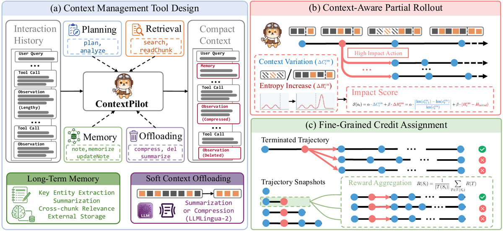
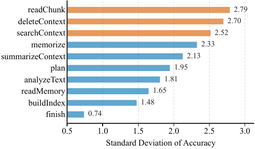
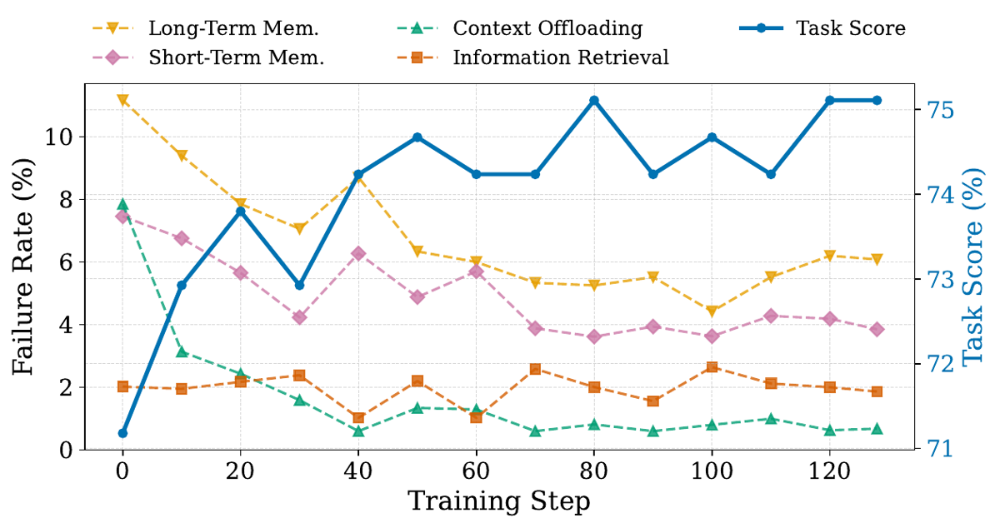

TL;DR — ContextPilot apprend à un agent à gérer son propre contexte (14 outils : plan, mémoire structurée, offloading « doux ») et, surtout, propose la première recette RL qui prend au sérieux le fait que l'édition de contexte découpe la trajectoire en arbre : segmentation en trajectory snapshots aux points d'édition, branchement supplémentaire sur les éditions jugées critiques (variation de longueur de contexte + variation d'entropie), et crédit d'une édition = moyenne des rewards terminaux de toutes les branches qui passent par elle.
Claim principal, formulé précisément : à budget de contexte 32K, le modèle entraîné (SFT puis RL) bat (a) son propre backbone à 128K sans outils, (b) les agents de context management RL antérieurs — +3,55 pts de moyenne sur 4 benchmarks de long-context QA face à StateLM-8B-RL [§5.2] — et (c) en deep search, +1,51 pt de moyenne sur SUPO moyenné sur deux backbones [§5.2] ; l'ablation attribue +2,03 pts de moyenne (Qwen3-8B) au seul crédit fine-grained par-dessus GRPO + partial rollout [Tab. 6].
⚠️ Le papier répond précisément à la question « comment entraîner une action qui réécrit l'historique sur lequel on calcule le gradient » — mais il y répond par la structure des échantillons (snapshots), jamais par la mécanique du gradient : pas un mot sur le ratio d'importance, le clipping, ni l'alignement des logprobs rollout↔train. Détail en §4.
Origine des tâches. Aucune tâche créée : réutilisation de benchmarks publics. Long-context QA — SFT construit sur le split PublicDomain de NovelQA et le split train de NarrativeQA ; RL sur le train de LongBench-v2 [§4.1]. Deep search — RL sur 1 000 questions tirées aléatoirement d'OpenSeeker-v1, pas de SFT (« ils possèdent déjà des capacités de recherche de base ») [§4.1].
Pipeline SFT, étape par étape [§3.2, App. C] :
1. Harness de génération : le teacher (Qwen3.5-397B-A17B en mode thinking, temp 0,6, top-p 0,95, sortie max 4K) ne voit à chaque pas que les outils dont les préconditions sont satisfaites — readMemory indisponible tant qu'aucune mémoire n'est écrite, readChunk/readMultiChunks retenus tant que searchContext n'a pas été appelé [App. C].
2. Scaffolding de génération : indices et contraintes injectés aux bons pas (p. ex. forcer readChunk après une recherche ; au-delà d'un seuil de longueur, restreindre le modèle aux seuls outils d'offloading) ; mécanisme de correction et retry sur erreur récupérable (id de message inexistant ou déjà supprimé → hint ciblé + retry ; réponse en texte brut → rappel d'appeler finish). Tous ces indices sont retirés des trajectoires finales, et en cas de retry seule la dernière tentative réussie est conservée, « pour éviter d'imiter les appels ratés » [§3.2, App. C].
3. Filtrage en trois étages [App. C] : (i) outcome, exact match, avec 2 retries autorisés si la première réponse est fausse ; (ii) process — GPT-OSS-120B élimine les trajectoires au context management « inapproprié » ; (iii) longueur — rejet si le pic de contexte dépasse 32K.
4. Rendement du filtrage : 3 196 questions → 3 114 trajectoires après filtrage outcome → 3 068 après process + pic de tokens (process et longueur n'enlèvent que 46 trajectoires, soit 1,5 %) [App. C].
5. Segmentation : les trajectoires retenues sont découpées aux opérations d'édition de contexte → 51 469 snapshots SFT [App. B, App. C]. Par source : NovelQA 3 096 Q → 2 987 traj → 50 691 snapshots ; NarrativeQA 100 Q → 81 traj → 778 snapshots [Tab. 5].
⚠️ Déséquilibre massif de la data SFT : 98,5 % des snapshots viennent de NovelQA. L'« extension » NarrativeQA est cosmétique (81 trajectoires).
Volume RL : 488 questions LongBench-v2, 1 000 questions OpenSeeker [Tab. 5]. C'est très petit — 128 steps × batch 16 = 2 048 requêtes traitées, donc ~4 époques sur LongBench-v2.
Distribution de difficulté : non caractérisée. Seul proxy donné : longueur d'entrée moyenne — NovelQA ≈ 119K tokens vs BrowseComp+ ≈ 552K [§5.2].
Filtrage par pass@k du modèle de base : non — le filtrage porte sur le teacher (pass@3 de fait, via les 2 retries), pas sur le modèle entraîné. Aucun filtrage de difficulté sur le pool RL, aucun rééchantillonnage.
Curriculum : aucun. Pas d'ordre, pas de mélange annoncé, pas de rééchantillonnage en cours d'entraînement.
Contamination / séparation train-test : partiellement traitée et partiellement avouée. Le SFT utilise NovelQA-PublicDomain et l'éval NovelQA-Copyright — mêmes corpus-sources, même format ; les auteurs l'écrivent eux-mêmes pour expliquer le gain RL modeste sur NovelQA (« the SFT data already includes another split of NovelQA ») [§5.2]. Rien sur la contamination de BrowseComp/BrowseComp-ZH dans les backbones WebSailor/WebExplorer, qui sont des modèles déjà post-entraînés pour le web.
Données SFT/IFT avant RL : 51 469 snapshots distillés d'un teacher 397B — rôle de cold start indispensable : sans SFT, le prompt-only « w/ tools » est catastrophique (Qwen3-8B 27,61 avec outils vs 45,93 sans outils) [Tab. 1].
Coût humain : aucun annotateur humain. App. H : « We do not collect new data from human subjects ». Tout le process-filtering est fait par GPT-OSS-120B, tout le jugement d'éval ouvert aussi. Les auteurs mentionnent l'usage de Codex (code) et ChatGPT (rédaction) [App. I].
Observation. Le contexte de travail lui-même, tel que réécrit par les outils : système + question + suite (thought, tool call, tool response), où chaque message porte un identifiant explicite [msg_id=N] utilisé comme adresse par les outils d'édition [Fig. 7, prompt système]. Les messages édités sont remplacés par un placeholder / un résumé / une version compressée. Budget : max 30K d'entrée, 2K de génération [§4.2, App. D], fenêtre annoncée 32K [Tab. 1].
Espace d'actions — 14 outils [Tab. 2, les 7 en gras sont nouveaux vs StateLM] :
| Catégorie | Outils | Fonction (recopiée) |
|---|---|---|
| Perception & Planning | analyzeText |
Calculate context length. |
checkBudget |
Check remaining token budget. | |
plan |
Propose a concise plan. | |
| Information Retrieval | buildIndex |
Build a searchable index. |
searchContext |
Search for relevant content. | |
readChunk |
Load a specific context chunk. | |
readMultiChunks |
Batch load multiple context chunks. | |
| Memory Management | note / updateNote / readNote |
Record / update / load a note. |
memorize |
Extract key information and cross-chunk relations into event memory. | |
updateMemory / readMemory |
Update / load a memory item. | |
| Context Offloading | deleteContext |
Replace a message with a placeholder. |
summarizeContext |
Replace a message with a summary. | |
compressContext |
Compress a message via a lightweight compression model (llmlingua-2). | |
foldHistory |
Discard all historical messages and build a searchable index. |
⚠️ Les signatures ne sont pas données (ni arguments, ni types, ni valeurs de retour) — seulement des descriptions en une ligne [Tab. 2]. Le prompt système [Fig. 7] laisse apparaître des outils absents de Tab. 2 : searchEngine, truncateContext, restoreContext, loadMemory, finish. Incohérence outils/prompt non expliquée ; le README du dépôt confirme que searchEngine existe et repose sur Elasticsearch.
memorize extrait entités, timestamps et épisodes d'événements, et construit des arêtes entre items de mémoire ; readMemory ramène un item avec ses voisins [§3.1]. foldHistory condense tout l'historique en mots-clés + résumé, récupérable via searchContext — c'est le seul outil d'offloading réversible [§3.1].
Outils d'édition (= points de découpe de snapshot) : offloading + écriture de mémoire + mise à jour de mémoire, « parce qu'ils modifient l'historique d'interaction » [§3.1]. Les outils de lecture/retrieval n'ouvrent pas de snapshot.
Multi-turn, horizon. Multi-turn. Budget max : 60 tours (long-context QA) / 60 appels d'outils (deep search), ce dernier suivant ReSum [App. D]. Une trajectoire est segmentée en au plus 8 snapshots en RL [§4.1, App. D]. L'analyse d'efficacité ne retient que les trajectoires ≥ 15 tours [§5.3].
Gestion du contexte long — et la trajectoire-arbre. C'est le cœur du papier et il faut être précis : la compaction casse bien la trajectoire, les auteurs le disent explicitement — « training solely on the final trajectory is inadequate, as context editing operations will modify historical messages » [§3.1] — et la réponse, héritée de Sculptor et StateLM et pas inventée ici, est double : (1) trajectory snapshots : M éditions découpent la trajectoire en M+1 snapshots, chacun traité comme une instance d'entraînement indépendante, de sorte que chaque état intermédiaire du contexte soit effectivement vu à l'entraînement ; (2) token-level loss masking pour exclure la loss des sorties déjà présentes dans un snapshot antérieur, « ce qui évite d'optimiser deux fois les appels d'outils précoces et améliore stabilité et efficacité » [§3.1]. ⚠️ Le masking est présenté dans la section Preliminary comme la pratique existante ; le papier ne dit jamais explicitement que ContextPilot l'applique — §3.3 se contente de « we optimize π_θ with the GRPO objective, treating each trajectory snapshot as an independent sample ». À vérifier dans le code (train/recipe/).
Exécution. verl [§4.1] ; compressContext appelle un modèle de compression externe (llmlingua-2) ; searchEngine repose sur Elasticsearch lancé localement [README du dépôt, pas le papier] ; deep search appelle search/visit sur le web réel. Déterminisme : non précisé. Reset : non précisé. Timeouts : non précisés. Aucune mention de sandbox, de mise en cache des pages, ni de stabilité du web entre les 3 runs.
Gestion des erreurs d'outils. Traitée sérieusement, et c'est l'un des apports les plus utiles du papier. Un appel est failed « quand son exécution déclenche une erreur côté environnement : appel mal formé, arguments invalides, violation d'une précondition propre à l'outil » ; retourner zéro évidence n'est pas compté comme un échec si la requête et l'index sont valides [App. G]. Tab. 7 donne les causes par outil, p. ex. : deleteContext — « l'index du message cible n'existe pas, a déjà été supprimé, ou désigne un message protégé (prompt système ou question utilisateur) » ; memorize — « contenu vide ou non parsable (p. ex. incohérent avec le schéma de stockage de la mémoire) » ; foldHistory — « aucun historique à replier, ou résumé et mots-clés non parsables ». Ces échecs sont (a) pénalisés dans le reward [§3.3] et (b) mesurés le long de l'entraînement [Fig. 5, App. G]. Pendant le SFT, le harness répare au lieu de pénaliser (hint + retry) [App. C].
Exemple de trajectoire. Le papier ne donne pas de trace complète, seulement deux chaînes d'outils [Fig. 3, traces de StateLM-8B sur BrowseComp+], recopiées :
- bonne réponse, mauvais context management : analyze → index → search×3 → readChunk → search×2 → readChunk → ⋯ → readChunk → search×2 → readChunk → finish ✅
- mauvaise réponse, bon context management : analyze → index → search → readChunk → note → delete×2 → search×2 → readChunk → updateNote → delete×2 → readNote → finish ❌
Type. Hybride, par benchmark : exact match pour les QCM, NovelQA et ∞Bench ; LLM-as-a-Judge pour tout le reste (LongMemEval-S, BrowseComp+, GAIA, BrowseComp, BrowseComp-ZH, xBench-DS) [§4.2]. Juge = GPT-OSS-120B, avec le prompt de jugement ouvert de StateLM [App. D].
Composition du reward terminal [§3.3] :
R(S_M) = R_out + R_fmt + R_pen
- R_out : comparaison réponse prédite / ground truth.
- R_fmt : la sortie finale est-elle parsable.
- R_pen : pénalise les appels d'outils invalides (exemple donné : appeler readMemory avant qu'aucune mémoire n'ait été construite) et les violations de longueur de contexte.
⚠️ Règle d'agrégation = somme simple, sans aucun coefficient donné. Ni les poids, ni les bornes, ni le signe/l'échelle de R_pen, ni le barème de R_out (binaire ? crédit partiel ?) ne sont précisés. Pas de clause d'échec. C'est le trou le plus gênant de la §3 pour qui veut répliquer : tout l'équilibre « réussir la tâche » vs « ne pas casser le contexte » tient dans ces trois coefficients non publiés.
Granularité — le point central. Outcome uniquement, mais propagé en arbre. Pour un snapshot intermédiaire S_i :
R(S_i) = (1/|T(S_i)|) · Σ_{T ∈ T(S_i)} R(T)
où T(S_i) est l'ensemble des trajectoires terminales ayant S_i pour préfixe [§3.3]. Autrement dit : le signal sur une décision de rétention est une estimation Monte-Carlo de sa valeur de continuation, et rien d'autre. Il n'existe aucun reward de process sur la qualité de l'édition elle-même pendant le RL (le process-filtering par GPT-OSS-120B n'intervient qu'en amont, sur la data SFT [App. C]).
⚠️ Et c'est précisément là que la logique du papier se mord la queue. La Fig. 3 est introduite pour montrer que la justesse finale est désalignée de la qualité du context management (bonne réponse obtenue par retrieval répété ; mauvaise réponse avec une gestion raisonnable), et les auteurs en concluent que le reward trajectoire-level « peut renforcer des comportements inefficaces et pénaliser des décisions raisonnables » [§3.2]. Mais le remède proposé moyenne le même reward d'outcome sur davantage de continuations : cela réduit la variance de l'estimateur (c'est exactement ce que démontre l'App. A, et rien de plus), cela ne corrige pas le biais de désalignement qui motivait la section. Si R_out ne sait pas distinguer « bonne gestion, mauvaise chance » de « mauvaise gestion, bonne chance », en moyenner 2 ou 10 ne le lui apprend pas. Les auteurs n'énoncent nulle part cette distinction variance/biais.
Fiabilité du vérifieur. ❌ Non mesurée, à aucun endroit. Pas d'accord juge↔humain, pas de faux positifs / faux négatifs (ni ensemble ni séparément), pas de reproductibilité du juge sur plusieurs tirages, pas d'accord inter-juges. Le juge est repris tel quel de StateLM — le papier ne rapporte aucune validation, ni la sienne ni celle héritée.
Prompt du juge (recopié intégralement, [App. D, Fig. 9]) :
Given a problem, its correct answer, and a student's answer below, your task is to review the student's answer and determine if it is correct by comparing it to the correct answer. If the student's answer is incomplete or ambiguous, assume it is incorrect.
Problem
{problem}
Answer
{answer}
Student Answer
{mode_ans}
Please put your final answer (True or False) in \boxed{}. Specifically, if the student's answer is correct, the final answer should be \boxed{True}; otherwise, the final answer should be \boxed{False}.
Pas de rubrique : binaire, sans critères décomposés, et le juge ne voit que le livrable, jamais la trajectoire — donc aucune part du reward ne juge la gestion du contexte. Noter la clause « si la réponse est incomplète ou ambiguë, suppose qu'elle est incorrecte » : elle pousse les faux négatifs plutôt que les faux positifs, ce qui est le bon sens pour du QA à réponse courte et exactement le mauvais réglage pour du juridique (une réponse juridique est longue et nuancée par construction).
Robustesse / attaque. ❌ Le vérifieur n'a jamais été attaqué, ni testé contre des solutions dégénérées ou des mutants. Un point de design limite les dégâts, et il mérite d'être relevé : la compacité n'est pas récompensée, elle n'est qu'une contrainte (R_pen sur dépassement de longueur) — il n'y a donc pas de gradient qui pousse à « tout supprimer ». ⚠️ Mais l'angle d'attaque symétrique reste ouvert : rien n'empêche la politique de minimiser R_pen en évitant les outils risqués (mémoire, offloading), seul le comportement observé (Fig. 4, usage croissant de ces outils) suggère que ça ne s'est pas produit.
Algorithme. GRPO [shao2024deepseekmath] avec chaque trajectory snapshot comme échantillon indépendant [§3.3]. Trois écarts au standard :
S(a_t^cm) = α·ΔC_t^cm + β·ΔH_t^cm, avec
ΔC_t^cm = |(len(c_{t+1}) − len(c_t)) / len(c_t)| (variation relative de longueur de contexte, en valeur absolue) et
ΔH_t^cm = H_t^cm − H_initial, où H_t^cm est l'entropie moyenne des k premiers tokens générés après l'observation du pas t et H_initial celle des k premiers tokens du début de trajectoire. Justification explicite du choix de la référence : la référence est l'entropie initiale et non celle du pas précédent, parce qu'on cherche les appels qui induisent un changement d'incertitude par rapport à l'état de la requête initiale, « pas des fluctuations locales entre pas adjacents » [§3.3]. k n'est jamais donné.N = 128 snapshots par requête ; on commence par 8 rollouts au niveau trajectoire, chaque trajectoire étant segmentée en au plus 8 snapshots → jusqu'à M = 64 snapshots ; si M < N, on classe toutes les actions de gestion de contexte par S décroissant et on prend les top N − M comme points de branchement ; depuis le nœud parent de chaque action sélectionnée, on échantillonne des sous-trajectoires supplémentaires.R(S_i) = moyenne des rewards terminaux des branches passant par S_i (voir §3), puis un seul groupe d'advantage par requête rassemblant tous les snapshots : G = {S_t^(j) | ∀ j, t}, et Â_t^(j) = (R(S_t^(j)) − mean(R(G))) / std(R(G)) [§3.3].Hyperparamètres [§4.1, App. D] — SFT : ZeRO-3, batch global 128, LR 5e-6, scheduler cosine, warmup ratio 0,03. RL : 128 steps, rollout batch size 16, coefficient KL 0,001, 8 rollouts trajectoire + partial rollout jusqu'à 128 snapshots/requête, α = β = 1, input max 30K / output max 2K, inférence temp 0,7 et top-p 0,8, budget 60 tours.
Ce qui n'est PAS donné, et qui compte :
- LR du RL : non précisé (seul celui du SFT l'est). Celui de SUPO reproduit est donné (1e-6, scheduler constant) [App. E] — pas le leur.
- Clipping : non précisé. ε_low/ε_high n'apparaissent que pour la reproduction de SUPO (0,20 / 0,28) [App. E].
- Référence du KL : non précisée (modèle SFT ? politique glissante ?).
- Normalisation de l'advantage : donnée (mean/std sur le groupe), mais aucune normalisation par longueur et aucune discussion du biais de longueur entre snapshots courts et longs.
- Nombre de branches par point de branchement : non précisé (seul le total 128 l'est).
- k dans le calcul d'entropie : non précisé.
- Seeds : 3 runs d'évaluation rapportés [Tab. 1, Tab. 2], mais rien n'indique que l'entraînement ait été relancé sur plusieurs seeds — et les tableaux d'ablation n'ont aucun écart-type [Tab. 3, 4, 6].
Alignement des logprobs entraînement ↔ inférence : jamais abordé. C'est le silence le plus important du papier, et il faut le dire franchement car c'est le point (a) du brief :
- Le papier voit le problème structurel (l'édition réécrit l'historique) et le traite au niveau de la construction des échantillons : chaque snapshot est un couple (préfixe post-édition, tokens émis sous ce préfixe), donc en principe « les tokens entraînés sont ceux qui ont été émis » — le snapshot préserve exactement le contexte sous lequel la génération a eu lieu. C'est bien la bonne réponse à « la compaction transforme la trajectoire en arbre ».
- Mais le ratio d'importance de PPO/GRPO n'est jamais mentionné, et trois conséquences restent entièrement non traitées :
(i) Mélange on-policy / off-policy intra-step : les branches de partial rollout sont tirées du nœud parent — même version de politique dans le step, donc a priori on-policy, mais le papier ne le dit pas et ne dit pas non plus s'il y a plusieurs passes d'optimisation par batch de rollout (le cas où le ratio devient non trivial).
(ii) Recalcul des logprobs entre moteur d'inférence et moteur d'entraînement (le décalage vLLM↔FSDP classique sous verl) : pas un mot, alors que c'est le vecteur canonique de divergence silencieuse.
(iii) Dépendance statistique dans le groupe d'advantage : le reward d'une branche terminale est compté deux fois dans G — une fois comme snapshot terminal, une fois à l'intérieur de la moyenne R(S_i) de son ancêtre. Le std(R(G)) est donc sous-estimé et les advantages des snapshots branchés mécaniquement gonflés. Non discuté.
(iv) Confusion de profondeur : G mélange des snapshots de profondeurs différentes avec une seule moyenne/écart-type. Un snapshot tardif d'une trajectoire réussie hérite donc d'un advantage positif en partie parce qu'il est tardif, pas parce que son édition était bonne. Aucun baseline par profondeur. ⚠️ C'est l'exact analogue, en version « arbre », du problème de densité de crédit que le corpus réclame de contrôler par permutation.
- Enfin, n_S = 1 pour tout snapshot non branché : pour ceux-là, « fine-grained credit » est identique au crédit trajectoire-level. L'estimateur est donc hétéroscédastique par construction (σ²(S)/n_S avec n_S ∈ {1, …}), ce que l'App. A reconnaît implicitement sans en tirer de conséquence sur la pondération.
Stabilité. Une seule instabilité rapportée, et elle est intéressante parce qu'elle est négative pour leur propre composant : le partial rollout à entropie seule « améliore plusieurs tâches mais reste instable », faisant chuter BrowseComp+ de 1,32 pt sur Qwen3-8B [§5.4, Tab. 4] — d'où l'ajout de la variation de contexte. Aucun crash, aucun collapse d'entropie, aucune astuce (pas de clip-higher, pas d'overlong masking côté ContextPilot — l'overlong masking n'est mentionné que pour SUPO [App. E]) n'est rapporté. ⚠️ Peu crédible pour un entraînement agentique à 60 tours sur du web réel : soit le KL à 1e-3 a tout lissé, soit les incidents n'ont pas été rapportés.
Compute. ❌ Non précisé : ni GPU-heures, ni nombre de GPU, ni durée. Le script publié expose GPUS_PER_NODE=8 [README du dépôt] — indicatif, pas une mesure. Les auteurs invoquent des « contraintes de calcul » pour justifier l'absence de recherche d'hyperparamètres, « en particulier pour le partial rollout et le credit assignment » [Limitations].
Dynamique. Pas de courbe de reward, pas de courbe de longueur de réponse, pas de courbe d'entropie (alors que l'entropie est au cœur de la méthode — ⚠️ absence notable). Deux dynamiques sont tracées, par checkpoint, tous les 10 steps : la répartition des catégories d'outils [Fig. 4] et les taux d'échec d'appel d'outils + le score de tâche [Fig. 5]. Voir §8.
Le papier n'a pas de section failure modes et ne mentionne aucun cas de reward hacking. Il faut le dire tel quel. Ce qu'il fournit à la place, et qui est plus utile que la moyenne du corpus, c'est une instrumentation des pannes d'outils :
| Comportement | Comment détecté | Correction | Correction évaluée ? |
|---|---|---|---|
| Appels d'outils mal formés / préconditions violées (mémoire, offloading) : ~11 % d'échec sur les outils de mémoire long-terme au step 0 (= sortie de SFT) | Comptage côté environnement, par catégorie d'outil, à chaque checkpoint [Fig. 5, App. G] | Pénalité R_pen dans le reward + exposition dynamique des seuls outils dont les préconditions sont satisfaites |
Partiellement : les taux chutent (offloading ~7,8 % → ~0,6 %), mais la mémoire long-terme remonte de ~4,4 % (step 100) à ~6,1 % (step 128) sur ∞Bench et stagne à ~6 % sur NovelQA [Fig. 5] |
| Teacher produisant des arguments invalides pendant la synthèse SFT | Harness de génération | Hint ciblé + retry, seule la tentative réussie est conservée [App. C] | Non évaluée séparément |
Teacher répondant en texte brut sans finish |
Harness | Rappel d'appeler finish [App. C] |
Non |
| Partial rollout piloté par l'entropie seule → instable | Ablation [Tab. 4] | Ajout de la variation de contexte dans S |
Oui, c'est l'objet de l'ablation (−1,32 → +1,44 sur BC+) |
Le constat le plus important pour un lecteur d'infrastructure : à la fin de l'entraînement, 5 à 6 % des appels d'outils de mémoire échouent encore côté environnement, et le score de tâche monte quand même [Fig. 5]. Autrement dit, ce papier — le seul du lot à instrumenter la chose — confirme que les échecs de gestion de contexte ne font pas échouer le run : ils se diluent. Sans le comptage explicite d'App. G, ce 6 % résiduel serait parfaitement invisible dans la courbe de reward. ⚠️ Et les auteurs ne s'en inquiètent pas : ils lisent la Fig. 5 comme une confirmation de synergie (« RL improves the reliability of context management operations while reshaping the model's tool use strategy » [App. G]), sans relever le rebond de fin d'entraînement.
Comportements émergents rapportés [§5.3, Fig. 4] : au début du RL, le retrieval représente « environ la moitié » des appels ; sa part décroît au fil de l'entraînement tandis que planning/perception, mémoire long-terme et offloading montent. Les auteurs y voient un passage « du retrieval naïf vers une gestion coordonnée ». ⚠️ Lecture alternative à ne pas écarter : le RL apprend surtout à réduire le coût (moins de reads, donc moins de tokens, donc moins de pénalités de longueur) ; rien dans le papier ne départage « gestion plus intelligente » de « gestion moins coûteuse », faute d'un axe de qualité de rétention tenu hors du reward.
Hacks crédibles non testés, vu la conception du reward : (1) foldHistory abusif — il replie tout l'historique et n'est récupérable que si le modèle pense à re-searchContext ; aucune mesure de « information perdue puis jamais récupérée » ; (2) summarizeContext produisant un résumé fidèle en apparence mais vidé des faits (le juge ne voit jamais la trajectoire, donc aucun signal) ; (3) retries de filtrage SFT (2 essais autorisés) qui sélectionnent des trajectoires chanceuses plutôt que bien gérées.
Quasi inexistante dans le papier — il faut le signaler, car la méthode est précisément celle dont l'infra est la plus délicate du corpus.
compressContext (llmlingua-2) et, en deep search, les appels web réels.train/recipe/).| Chiffre annoncé | Où il est annoncé | Source dans le papier | Verdict |
|---|---|---|---|
| « consistently outperforming existing baselines across various base models and benchmarks » | Abstract | Tab. 1 et Tab. 2 | sur-généralisé : 2 cellules sur 8 contredisent la consistance — xBench-DS/WebExplorer-8B, SUPO 58,00 vs ContextPilot 56,67 [Tab. 2] ; NovelQA/8B, StateLM-8B-RL 84,15 vs ContextPilot-8B-RL 83,88 [Tab. 1] |
| « achieves stronger performance with a more compact working context » | Abstract | Fig. 6 / Fig. 10 : WebExplorer-8B ~32K au tour 15 vs ContextPilot-8B plateau ~8–9K | confirmé, mais uniquement sur BrowseComp et BrowseComp-ZH, sur les trajectoires ≥ 15 tours, et sans tableau chiffré (lecture de figure) |
| ContextPilot-8B-RL > StateLM-8B-RL de 3,55 pts de moyenne sur 4 benchmarks | §5.2 | Tab. 1 : 69,40 − 65,85 = 3,55 | confirmé arithmétiquement — ⚠️ mais contre des chiffres repris de la publication StateLM (marqués †), non re-mesurés : budget non apparié (ContextPilot ajoute un SFT distillé d'un teacher 397B) |
| « surpasses SUPO by 1,51 average points across both backbones » (deep search) | §5.2 | Tab. 2 : WebSailor 38,32 − 36,31 = +2,01 ; WebExplorer 50,10 − 49,09 = +1,01 ; moyenne = 1,51 | confirmé — et ici la baseline est appariée (SUPO réentraîné sur les mêmes 1K OpenSeeker, mêmes backbones, même budget 30K/2K et 60 appels) [App. E] |
| ContextPilot-8B-RL > ContextPilot-8B de 3,62 pts de moyenne | §5.2 | Tab. 1 : 69,40 − 65,78 = 3,62 | confirmé |
| « substantial 5,34 point increase on BrowseComp+ » | §5.2 | Tab. 1 : 54,18 − 48,84 = 5,34 | confirmé |
| « 32K yet outperforms the 128K backbone » | §5.2 | Tab. 1 : 8B 69,40 vs 45,93 ; 14B 72,20 vs 53,26 ; E4B 60,96 vs 31,01 | confirmé sur les 3 backbones |
| NovelQA ≈ 119K tokens vs BrowseComp+ ≈ 552K, d'où « le bénéfice du RL est plus grand sur les tâches difficiles » | §5.2 | Aucune table ne donne ces longueurs | introuvable (les deux longueurs ne sont sourcées nulle part dans le papier) ; l'inférence causale longueur→gain repose en outre sur 2 points |
| Toolset : BrowseComp+ 63,49 % → 80,96 % avec le toolset complet | §5.4 | Tab. 3 | confirmé mais sur-généralisé : mesuré en prompt-only sur Qwen3.5-397B-A17B, sans entraînement ; le design du toolset n'est jamais ablaté sur un modèle entraîné |
| « certaines opérations sont plus sensibles » (pilot study) | §1, §3.2 | Fig. 2 : std d'accuracy par outil, 10 continuations, Qwen3-8B/NovelQA — readChunk 2,79 · deleteContext 2,70 · searchContext 2,52 · memorize 2,33 · summarizeContext 2,13 · plan 1,95 · analyzeText 1,81 · readMemory 1,65 · buildIndex 1,48 · finish 0,74 |
sur-généralisé : l'écart existe (0,74 → 2,79), mais les deux outils les plus sensibles ne sont pas des outils d'édition (readChunk, searchContext), alors que la méthode ne branche que sur les actions de gestion de contexte ; et aucun plafond de bruit (quel std obtiendrait-on en branchant depuis un point quelconque ?) ni IC sur les std eux-mêmes |
| Fine-grained credit assignment améliore « across all four benchmarks » | §5.4 | Tab. 4 : +0,83 / +1,31 / +2,87 / +3,10 | confirmé sur Qwen3-8B ; Tab. 6 confirme aussi sur Gemma4-E4B (+1,68 / +1,31 / +2,14 / +1,33) — ⚠️ sans écart-type, alors que Tab. 1 mesure des σ de 0,49 à 1,91 sur ces mêmes benchmarks |
Chiffres clés (long-context QA, moyenne 4 benchmarks, Tab. 1) :
| Modèle | Fenêtre | Moyenne | Écart vs son backbone sans outils |
|---|---|---|---|
| Qwen3-8B (sans outils) | 128K | 45,93 | — |
| Qwen3-8B (avec outils, non entraîné) | 32K | 27,61 | −18,32 |
| ContextPilot-8B (SFT) | 32K | 65,78 | +19,85 |
| ContextPilot-8B-RL | 32K | 69,40 | +23,47 |
| Qwen3-14B (avec outils, non entraîné) | 32K | 44,78 | −8,48 |
| ContextPilot-14B-RL | 32K | 72,20 | +18,94 |
| Gemma4-E4B-it (avec outils, non entraîné) | 32K | 23,55 | −7,46 |
| ContextPilot-E4B-RL | 32K | 60,96 | +29,95 |
| Qwen3.5-397B-A17B (avec outils, non entraîné) | 32K | 87,16 | +6,61 |
⚠️ Le résultat le plus actionnable du papier n'est pas son claim : donner un harness de gestion de contexte à un modèle non entraîné le dégrade massivement (−18,3 pts à 8B, −8,5 à 14B, −7,5 à E4B) et ne l'améliore qu'à partir de 397B (+6,6). L'outillage de contexte n'est pas un gain de harness, c'est une capacité qu'il faut entraîner, et le seuil de taille où il devient gratuit est très haut.
In-distribution vs OOD. Partiellement traité et jamais nommé comme tel. - Long-context QA : RL sur LongBench-v2 (488 Q), évaluation sur 4 jeux distincts → généralisation cross-dataset réelle. Nuance : NovelQA-Copyright est quasi-in-distribution par rapport au SFT (autre split du même corpus), et c'est l'unique benchmark où le gain RL est faible (+1,32) — les auteurs l'écrivent [§5.2]. Le gain maximal est sur le jeu le plus éloigné (BrowseComp+, +5,34). C'est le signal OOD le plus net du papier et il n'est jamais présenté en ces termes. - Deep search : RL sur 1K OpenSeeker, éval sur GAIA / BrowseComp / BrowseComp-ZH / xBench-DS, sans SFT → lecture plus propre de la contribution RL seule, et transfert cross-dataset confirmé (sauf xBench-DS, à l'arrêt). - ❌ Aucun transfert cross-domaine : rien du type « entraîner sur long-context QA aide-t-il en deep search ». Les deux familles ont des pipelines entièrement disjoints (backbones différents, SFT dans un cas et pas l'autre). Les auteurs listent eux-mêmes l'extension au coding agentique et aux agents GUI comme travail futur [Limitations].
Ablations. Deux, séparées :
- Toolset [Tab. 3, Qwen3.5-397B-A17B prompt-only, cumulatif] : outils originaux 77,89 → +planning 80,29 → +soft offloading 83,08 → +mémoire long-terme 87,16. La mémoire long-terme est le plus gros contributeur sur BrowseComp+ (71,20 → 80,96). ⚠️ Cumulatif, donc ordre-dépendant, et jamais refait sur un modèle entraîné.
- Algorithme RL [Tab. 4 / Tab. 6, Qwen3-8B et Gemma4-E4B] : SFT → GRPO (+1,06 / +2,41 de moyenne) → +partial rollout entropie (+0,00 / +1,85) → +partial rollout context-aware (+0,53 / +0,36) → +crédit fine-grained (+2,03 / +1,62). Verdict net : le composant qui porte le résultat est le crédit fine-grained, pas le partial rollout — ce dernier n'apporte que +0,53 et +0,36 de moyenne, en-dessous des écarts-types inter-runs de Tab. 1 (0,49–1,91). Les auteurs ne tirent pas cette conclusion pourtant évidente dans leurs propres chiffres.
- ❌ Jamais ablaté : les termes du reward (R_fmt, R_pen), α et β (fixés à 1 sans justification ni balayage — les auteurs l'assument dans Limitations), la profondeur max de snapshot (8), le budget N (128), le token-level loss masking.
Scaling. Taille de modèle : 3 points en long-context QA (E4B → 8B → 14B), gains monotones mais décroissants après RL (60,96 → 69,40 → 72,20) ; plus le backbone est fort, moins le harness entraîné apporte relativement, et le 397B n'a plus besoin d'entraînement du tout [Tab. 1, Tab. 3]. Nombre de tâches : non étudié. Compute : non étudié (pas de courbe steps→score au-delà des 128 steps tracés).
Solidité (6 cases)
- ✅ baselines — Deep search : SUPO et OpenSeeker réentraînés sur les mêmes 1K OpenSeeker, mêmes backbones, même budget (30K/2K, 60 appels) [App. E] ; ReSum reproduit avec un substitut déclaré (Qwen3-30B-A3B, le summarizer officiel n'étant pas public). Baseline « w/ tools » = placebo exact (mêmes outils, zéro entraînement). ⚠️ Mais la moitié long-context QA repose sur des chiffres recopiés de StateLM (†), non appariés en budget SFT.
- ✅ ablation — Tab. 4 et Tab. 6 isolent GRPO → entropie → contexte → crédit fine-grained sur deux modèles, et désignent le composant qui compte.
- ✅ variance — 3 runs avec moyenne ± écart-type sur tous les résultats principaux [Tab. 1, Tab. 2]. ⚠️ Rien sur les tableaux d'ablation, et rien ne dit que l'entraînement ait été resemé.
- ❌ coherence — les chiffres individuels sont tous exacts, mais le qualificatif central de l'abstract (« consistently outperforming ») est contredit en 2 cellules sur 8 ; les longueurs 119K/552K sont introuvables ; l'ablation du toolset est présentée comme validant un design qui n'a été testé qu'en prompt-only sur un modèle 50× plus gros.
- ❌ eval — juge GPT-OSS-120B jamais validé (aucun accord humain, aucun FP/FN, aucune reproductibilité), rubrique binaire héritée sans vérification ; chevauchement SFT/éval avoué sur NovelQA ; contamination web des backbones non examinée.
- ✅ repro — code d'entraînement (fork verl, recettes 8B/14B) et suite d'évaluation et poids vérifiés en ligne le 2026-10-19 ; données d'éval LongMemEval-S et BrowseComp+ embarquées dans le dépôt (Git LFS). ⚠️ Réserve explicite : les 51 469 snapshots SFT ne sont pas publiés, et le train.parquet RL est laissé à la charge de l'utilisateur ; NovelQA exige une demande d'accès (restriction de licence tierce, pas des auteurs).
→ evidence = 4/6, manquant [coherence, eval].
Verdict : plausible mais fragile, avec un noyau solide. Solide : le gain en deep search (baseline réentraînée sur la même donnée, 3 runs, 2 backbones), le gain SFT→RL, et le fait que l'outillage de contexte soit nuisible sans entraînement. Fragile : (1) le partial rollout — la moitié « exploration » de la contribution — ne dépasse pas le bruit inter-runs, et on ne sait pas si la baseline GRPO a reçu le même budget de snapshots ; (2) le juge n'est pas validé alors qu'il décide 6 benchmarks sur 8 ; (3) le claim de consistance est faux au sens littéral. À répliquer en priorité sur un point : le crédit fine-grained à budget de snapshots strictement égal.

Ce qu'il faut voir : le panneau (c) est la réponse du papier à « la compaction transforme la trajectoire en arbre » — l'arbre n'est pas un accident à réparer, il est assumé et exploité : les nœuds rouges sont les actions d'édition, chaque snapshot intermédiaire est entraîné avecR(S_i) = (1/|T(S_i)|)·Σ R(T), la moyenne des rewards terminaux de ses descendants (✅/❌ à droite). Le panneau (b) montre que le branchement n'est pas uniforme : seules les actions à S(a_t) élevé (variation de longueur de contexte + hausse d'entropie) sont rééchantillonnées. Le panneau (a) montre l'objet réel de l'environnement : passer d'un Interaction History qui croît à un Compact Context où les observations sont Compressed / Deleted et les faits durables déplacés dans Memory.

Ce qu'il faut voir : le pilot study qui justifie le branchement sélectif — et sa faiblesse. L'étalement est réel (finish 0,74 → readChunk 2,79), mais les deux premières places sont tenues par readChunk (2,79) et searchContext (2,52), qui ne sont pas des outils d'édition et sur lesquels la méthode ne branche pas ; deleteContext (2,70) est le seul outil d'édition du trio de tête. Aucun plafond de bruit : rien ne dit quel écart-type on obtiendrait en branchant depuis un point arbitraire, donc rien ne garantit que 1,48 et 2,79 soient distinguables à 10 continuations.

Ce qu'il faut voir : la figure la plus importante du papier pour un lecteur d'infrastructure, et elle dit l'inverse de sa légende. Le modèle sorti du SFT rate 11,2 % de ses appels de mémoire long-terme et 7,8 % de ses appels d'offloading (step 0), contre ~2 % pour le retrieval : les outils qui réécrivent le contexte sont ceux que le SFT ne transmet pas. Le RL répare l'offloading (→ ~0,6 %), mais la mémoire long-terme plafonne vers 4,4 % au step 100 puis remonte à ~6,1 % au step 128 pendant que le score de tâche continue de monter (71,2 → 75,1). Conclusion à retenir : ~6 % des éditions de contexte échouent encore à la fin de l'entraînement sans jamais faire échouer le run — invisible sans le comptage explicite d'App. G, car aucune courbe de reward ne porte cette signature. (Même motif sur NovelQA,pdf_tool_errors_dual_y_NovelQA_CopyrightProtected_Ours-8B_SFT_to_RL.png, où l'axe du score ne couvre que 82,5–83,9 : la « synergie » y est une oscillation de 1,3 pt sur un axe dilaté.)
| Ingrédient | Choix du papier | Équivalent juridique | Transfert | Ce qui manque |
|---|---|---|---|---|
| Source des tâches | Benchmarks publics réutilisés (NovelQA, LongBench-v2, OpenSeeker) ; zéro annotation humaine [App. H] | Questions de recherche juridique sur un corpus fermé (jurisprudence, contrats, dossier) — Harvey LAB / Vals ont déjà les questions | adaptable | Rien en droit n'a d'équivalent « PublicDomain split » à distiller : le teacher 397B n'a pas de ground truth juridique à imiter |
| Vérifieur | Outcome seul (EM ou juge binaire GPT-OSS-120B), jamais validé ; crédit intermédiaire = moyenne des outcomes des branches [§3.3, App. D] | Pas de réponse courte vérifiable ; livrable long et argumenté | non en l'état — mais la structure (crédit intermédiaire = valeur de continuation Monte-Carlo) est directement transposable, car elle ne demande rien d'autre qu'un reward terminal, quel qu'il soit | Un reward terminal juridique fiable. La méthode hérite exactement de la qualité du juge final : avec un juge à 80 % d'accord, moyenner sur les branches propage le biais plus proprement, elle ne le corrige pas |
| Harness / outils | 14 outils, préconditions dynamiquement appliquées (outil non exposé si précondition non satisfaite), erreurs typées par outil [Tab. 2, Tab. 7, App. C] | note/memorize → fiche de synthèse par source ; summarizeContext → résumé d'arrêt ; foldHistory → repli du dossier consulté, réouvrable par mots-clés ; plan → plan de recherche |
direct — c'est l'ingrédient le plus réutilisable tel quel | Un outil de citation vérifiable : rien ici ne garantit qu'un fait résumé reste traçable jusqu'à sa source. summarizeContext détruit l'attribution, ce qui est acceptable en QA et disqualifiant en droit |
| Algo | GRPO, snapshot = échantillon, groupe d'advantage par requête, KL 1e-3, 128 snapshots/requête [§3.3, App. D] | Idem, sur des trajectoires de recherche documentaire longues | adaptable | Aucune discussion du ratio d'importance / de l'alignement des logprobs ; confusion de profondeur dans le groupe d'advantage ; LR et clipping non publiés |
| Curriculum | Aucun | Graduer par juridiction, par ancienneté des sources, par nombre de sources à croiser | non (rien à transférer) | Tout |
| Anti-hacking | Aucun test d'attaque ; protection structurelle utile : la compacité est une contrainte (R_pen), pas une récompense [§3.3] |
Le même principe évite qu'un agent juridique « résume pour résumer » | direct (le principe) | Aucune mesure d'« information perdue puis jamais récupérée » après un foldHistory/summarizeContext — en droit, l'omission coûte plus cher que l'erreur, donc c'est exactement la métrique qui manque |
Meilleur ingrédient à transposer. Le crédit snapshot-level par valeur de continuation : R(S_i) = moyenne des rewards terminaux des branches passant par S_i. Raison : c'est la seule construction du papier qui donne un signal d'apprentissage à une décision qui n'a aucun succès observable immédiat — et une décision de rétention juridique (« ce considérant, je le garde ou je le replie ? ») est exactement de cette nature. Elle ne requiert aucun vérifieur intermédiaire, seulement la capacité de rebrancher la génération depuis un nœud, ce qui est un problème d'infra, pas de données — donc ça contourne précisément le point dur du droit (pas de vérité exacte à mi-parcours, et pas d'expert disponible pour en fabriquer une). Second choix, moins ambitieux et plus sûr : l'exposition dynamique des outils par précondition + la table d'erreurs typée par outil [Tab. 7], qui transforme les pannes silencieuses de harness en une métrique suivie step par step.
Expérience minimale. Sur un env de recherche juridique à ~30K de contexte avec 3 outils d'édition (note, summarizeContext, foldHistory) et un reward terminal unique (juge sur le livrable), comparer à budget de rollouts strictement égal — c'est le contrôle que le papier ne fournit pas — trois conditions : (A) GRPO trajectoire-level, (B) GRPO snapshot-level avec reward terminal recopié sur tous les snapshots (= StateLM), (C) GRPO snapshot-level avec crédit = moyenne des branches (= ContextPilot). Mesurer, outre le score : le taux d'échec d'appel des outils d'édition par step (Tab. 7 transposée) et une métrique d'omission tenue hors du reward — « citation présente dans le dossier, absente du livrable final, et dont l'information avait transité par un message replié ».
- Résultat attendu : C > B > A sur le score, avec un écart C−B de l'ordre de +2 pts (l'ordre de grandeur observé, +2,03 sur Qwen3-8B [Tab. 6]), et une baisse du taux d'omission en C.
- Résultat qui falsifierait : C ≈ B à budget égal (alors le gain publié n'était que du budget d'échantillonnage supplémentaire), ou C > B sur le score avec un taux d'omission qui monte — ce serait le signe que moyenner un reward d'outcome sur des branches apprend à compacter agressivement en se reposant sur la chance de récupération, c'est-à-dire exactement le biais que la Fig. 3 du papier décrit et que sa méthode ne corrige pas.
Laisser tourner 128 steps pour voir le rebond de fin d'entraînement de la Fig. 5 : s'il apparaît aussi en juridique, le taux d'échec d'édition doit devenir un critère d'arrêt, pas une statistique de fin.
Question à poser en interne chez GDM. Deux, liées : 1. Dans notre pile de post-training agentique, quand une trajectoire est compactée en cours de rollout, l'échantillon entraîné porte-t-il le contexte post-compaction réellement utilisé à la génération, ou le contexte reconstruit ? ContextPilot répond par la segmentation en snapshots, mais ne dit rien de l'alignement des logprobs rollout↔train — c'est le genre de divergence qui ne laisse aucune trace dans la courbe de reward, et c'est précisément le scénario où notre agent juridique (contexte long, compaction obligatoire) y est le plus exposé. 2. Comptons-nous les appels d'outils de gestion de contexte qui échouent côté environnement, séparément par outil, à chaque checkpoint ? Ce papier montre qu'il en reste ~6 % à la fin d'un entraînement qui, par ailleurs, s'améliore — donc le run réussit avec un harness partiellement cassé. Si on ne l'instrumente pas, on ne le verra pas.